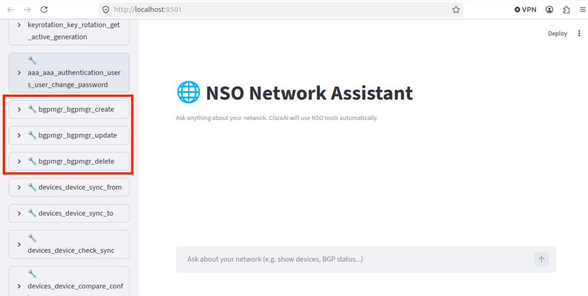
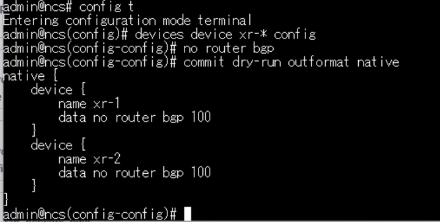
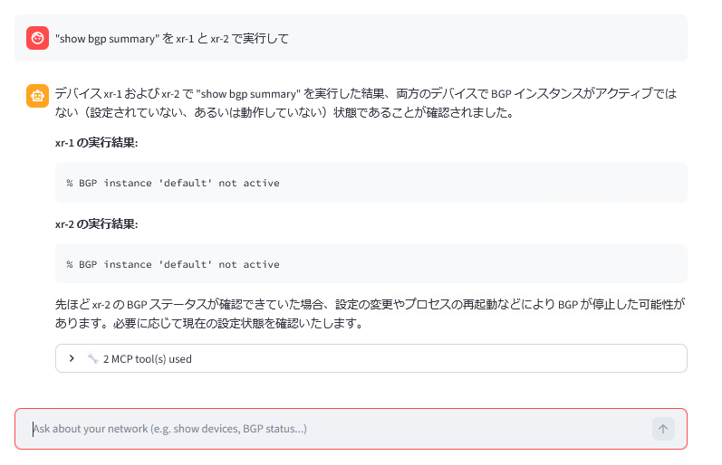
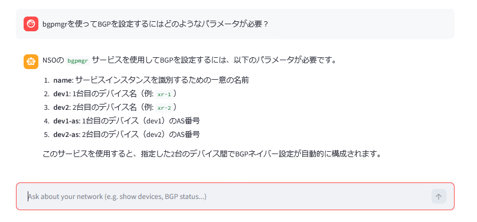
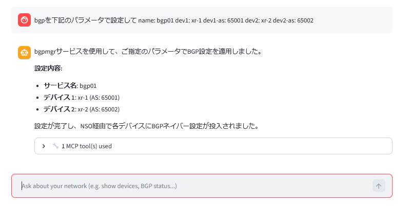
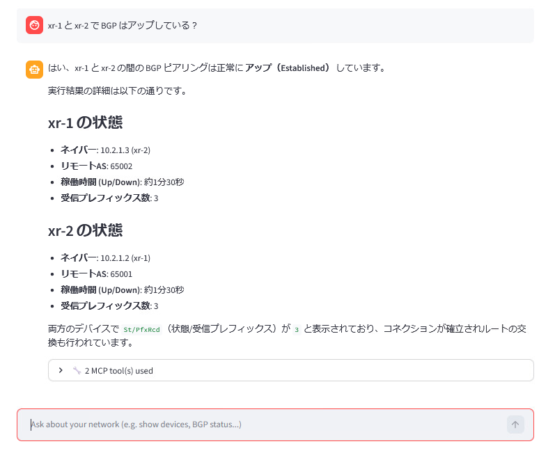
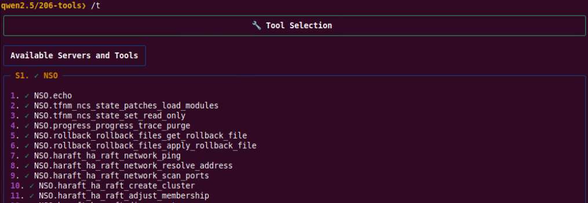
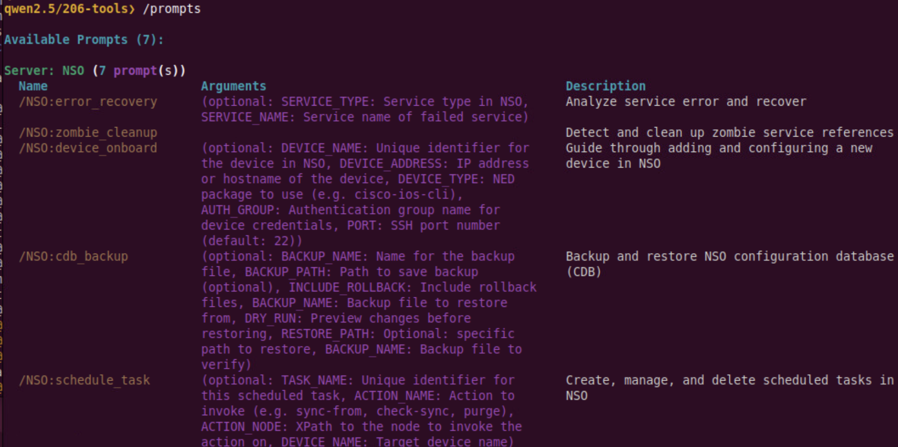

NSO MCP — サービスモデルとBGP
この前のラボからの続き
ここまでのラボでは、permitポリシーを通じてNSO MCPを公開し、http://198.18.134.27:8501/ でWeb MCPクライアントを実行したところで終了しました。このラボでは、実際のサービスパッケージ (bgpmgr) を同じMCPクライアントに組み込み、自然言語を使用してxr-1とxr-2間でBGPを設定します。その後、ollmcp クライアントを使用して内部の仕組みを確認します。
学習目標
このラボを完了すると、以下のことができるようになります。
- カスタムNSOサービスパッケージ (
dcloud-bgpmgr) をクローンおよびコンパイルし、packages reloadを介してロードする。 - Refresh Toolsを押した後、パッケージのツールがMCP Webクライアントに表示されることを確認する。
- MCPクライアントを使用して、BGPサービスにどのようなパラメータが必要かを尋ね、設定を適用する。
- MCPを通じてBGPネイバーのステータスを確認する（デバイスCLIで直接
show bgpを実行する必要はありません）。 - CPU専用の
ollmcpMCPクライアントを起動し、/tと/promptsを介してNSOのツールとプロンプトをリストアップする。
前提条件
- NSO MCP のセットアップ を完了していること。
- NSO 6.7 LTSが実行されており、MCPサーバーがenabled（有効）で、ポリシーのdefault-actionが
permitになっていること（Webクライアントで100個以上のツールが表示されていること）。 - Web MCPクライアントが http://198.18.134.27:8501/ で到達可能であること。
- xr-1 と xr-2 の両方が
sync-from: trueの状態であること。
手順
ステップ 1: bgpmgr サービスパッケージをクローンしてコンパイルする
bgpmgr は 2 台のルータに対して iBGP/eBGP を設定するための NSO パッケージで 下記の 5 つのパラメータを入力値として持ちます。
- name: 設定名
- dev1: 1 台目のデバイス
- dev1-as: 1 台目の AS 番号
- dev2: 2 台目のデバイス
- dev2-as: 2 台目の AS 番号
Github から bgpmgr パッケージをクローンし NSO にインストールします。 サービスパッケージをロードすると、NSO MCPに追加のツールが自動的に追加されます。
下記の作業を Linux の CLI から実施します
cd
cd ncs-run/packages
git clone https://github.com/hitakaha/dcloud-bgpmgr.git
パッケージをコンパイルします。
cd dcloud-bgpmgr/src
make clean
make
ステップ 2: パッケージをNSOにロードする
NSO CLIで以下を実行します。
ncs_cli -Cu admin
admin@ncs# packages reload
リロードが完了するまで待ちます。
ステップ 3: MCP Webクライアントに bgpmgr ツールが表示されることを確認する
web-ui (http://198.18.134.27:8501/) に戻り、左側のメニューの Refresh Tools を押します。これで、コアのNSOツールと一緒に bgpmgr ツールがリスト表示されるはずです（かなり下の方になります）。

ステップ 4: xr-1 と xr-2 の既存のBGP設定をクリアする
現在、両方のXRdルータには以前のラボのBGP設定が残っています。MCP経由で設定するためのクリーンな状態にするため、NSOを通じてこれを削除します。
admin@ncs# config
admin@ncs(config)# devices device xr-1 config
admin@ncs(config-config)# no router bgp
admin@ncs(config-config)# top
admin@ncs(config)# devices device xr-2 config
admin@ncs(config-config)# no router bgp
admin@ncs(config-config)# commit
admin@ncs(config-config)# end
admin@ncs# exit
下記のように一括で削除も可能です。

実際にルータにアクセスして設定を確認されたい場合、下記の情報でアクセス可能です。
- xr-1: ssh admin@172.30.0.2 (password=cisco123)
- xr-2: ssh admin@172.30.0.3 (password=cisco123)
ステップ 5: BGPネイバーが存在しないことを確認する — MCP経由
Web MCPクライアントで、BGPネイバーが存在しないことを確認するようアシスタントに依頼します。
"show bgp summary" を xr-1 と xr-2 で実行して

ステップ 6: bgpmgr に必要なパラメータをアシスタントに尋ねる
YANGモデルを直接読むことなく、MCPクライアントを使用してパッケージを使うことができます。
"bgpmgrを使ってBGPを設定するにはどのようなパラメータが必要？"

ステップ 7: アシスタントを通じて xr-1 と xr-2 間にBGPを設定する
次に、先ほどリストアップされたパラメータを使用して、BGPを設定するようにアシスタントに依頼します。
"BGP を下記のパラメータで設定して name: bpg01 dev1: xr-1 dev1-as: 65001 dev2: xr-2 dev2-as: 65002"
アシスタントは要求を適切な bgpmgr サービスの呼び出しに変換し、NSOを通じてコミットします。

ステップ 8: BGPネイバーがアップしていることを確認する — MCP経由
同僚に尋ねるのと同じように、もう一度アシスタントに尋ねます。
"xr-1とxr-2 で BGP はアップしている？"

ステップ 9: ollmcp でMCPのツールとプロンプトを検査する
このシナリオには、2 つ目のMCPクライアントとして ollmcp が同梱されています。ここでは純粋に分析目的（NSO MCPが何を公開しているかをリストアップするため）に使用します。
新しいターミナルタブを開き、以下を実行します。
cd
cd NSO-6.7-LTS-free/ollmcp
source venv/bin/activate
ollmcp -j ollama-mcp-config.json
ollmcp のプロンプトで /t と入力し、現在MCPによって公開されているすべてのNSOツールをリストアップします。

/prompts と入力して、利用可能なすべてのMCPプロンプトをリストアップします。

このクライアントの詳細については、https://github.com/jonigl/mcp-client-for-ollama を参照してください。
ollmcpのパフォーマンス
このシナリオのOllamaベースのMCPクライアントはCPUのみ（GPUなし）で実行されるため、非常に低速です。インタラクティブなアシスタントとしてではなく、分析ツールとして扱ってください。
確認
ここまでの手順で、以下の状態になっているはずです。
-
bgpmgrパッケージがコンパイルおよびロードされ、Refresh Tools の後にそのツールがMCP Webクライアントに表示されていること。 - xr-1 / xr-2 のBGP設定がエンドツーエンドでMCPを通じて作成されていること（手動で
router bgpコンフィグを入力していないこと）。 - xr-1 と xr-2 間のBGPネイバーが、MCPアシスタントによって up / Established として報告されていること。
-
ollmcpが実行されており、NSOのツール (/t) とプロンプト (/prompts) をリストアップできること。
トラブルシューティング
- Refresh Toolsの後に
bgpmgrツールが表示されない — NSO CLIでpackages reloadが正常に完了したことを確認します（show packages package bgpmgr oper-status）。その後、再度 Refresh Tools を押してください。 makeによるパッケージのコンパイルが失敗する —~/ncs-run/packages/dcloud-bgpmgr/src/ディレクトリ内にいること、およびシェルでNSO-6.7/ncsrcが読み込まれていること（sourceされていること）を確認してください。- MCPがデバイスに到達できない — NSO CLIで
devices sync-fromを再確認し、デバイスのauthgroupが引き続き解決可能であることを確認してください。 - アシスタントが拒否するか、空のプランを返す — MCPポリシーが
restrictedに戻っている可能性があります。mcp-server policies default-action permitがコミットされていることを再確認してください。
次のステップ
ここまでのラボでは、自然言語でNSOを操作し、カスタムサービスパッケージを同じインターフェースに組み込む方法として NSO 6.7 MCP を紹介しました。次のラボで NSO MCP のポリシー は カスタム mcp-server policies を学びます。